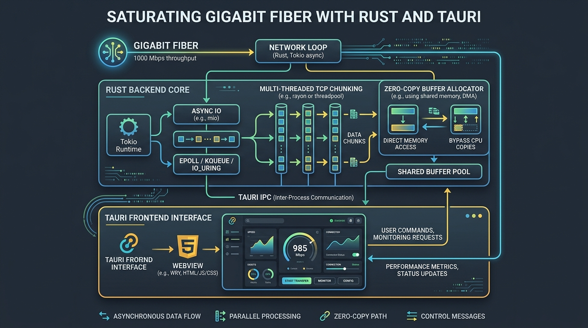

Saturating Gigabit Fiber: Building a High-Throughput Download Manager in Rust and Tauri

The Bandwidth Gap: Why Single TCP Streams Under-utilize Gigabit Fiber
On high-latency intercontinental connections, a single TCP stream rarely saturates a 1 Gbps fiber pipe. TCP window sizing, congestion control backoff, and packet round-trip times (RTT) artificially limit single-socket transfer speeds to a fraction of available capacity.
Legacy tools like IDM bypassed this in the 1990s by splitting files across multiple TCP connections. But modern download managers face three problems: 1. The 32-Socket Ceiling: Older C++ tools cap concurrency at 32 segments, leaving bandwidth on the table on multi-gigabit connections. 2. Electron Bloat: Modern open-source download managers package full Chromium browsers, burning 150MB–250MB of RAM just to idle in the Windows system tray. 3. Nagware and Licensing: Proprietary utilities cost \$25/year and bundle aggressive anti-piracy checks that trigger false-positive anti-virus warnings.
We built NeXDM using Rust and Tauri to achieve 64-segment saturation in a 4MB binary that idles at 28MB of RAM.
┌────────────────────────────────────────────────────────┐
│ Source File (Remote URL) │
│ [ Range 0-25% ] [ Range 26-50% ] [ Range 51-75% ] │
└───────┬───────────────────┬───────────────────┬────────┘
│ │ │
▼ (Socket 1..16) ▼ (Socket 17..32) ▼ (Socket 33..64)
┌────────────────────────────────────────────────────────┐
│ NeXDM Async Rust Engine (Tokio Core) │
│ - 64 Concurrent HTTP Range Requests │
│ - Zero-Copy Ring Buffer Recycling │
│ - Non-Blocking Asynchronous Disk Flush │
└───────────────────────────┬────────────────────────────┘
│
▼
┌────────────────────────────────────────────────────────┐
│ Local Target File (Assembled ISO/Zip) │
└────────────────────────────────────────────────────────┘
How the Rust + Tokio Network Engine Scales to 64 Segments
NeXDM relies on three core systems engineering patterns:
1. HTTP Byte-Range Slicing
When a download initiates, NeXDM issues an HTTPHEAD request to inspect Accept-Ranges: bytes and Content-Length. It partitions the payload across up to 64 discrete byte segments (Range: bytes=start-end) and streams them over pooled Tokio asynchronous sockets.
2. Zero-Copy Ring Buffer Recycling
Writing 64 high-speed network streams to disk can thrash memory if buffers are constantly reallocated on the heap. NeXDM uses pre-allocated ring buffers in Rust, streaming chunks directly from the network socket into OS file handles via asynchronoustokio::fs::File writes with zero intermediate allocations.
3. Tauri vs Electron: WebView2 Native Architecture
Rather than bundling Chromium and Node.js runtimes, Tauri binds the UI to Windows' nativeWebView2 engine while running the download worker as compiled native Rust machine code. This drops installer size from ~95MB to ~4MB.
Comparison: Download Manager Architectures
| Dimension | NeXDM | IDM (Legacy) | Free Download Manager | Motrix |
|---|---|---|---|---|
| Core Architecture | Rust + Tauri | Win32 / C++ | Qt / C++ | Electron + Node.js |
| Max Parallel Segments | 64 Segments | 32 Segments | 32 Segments | 64 Segments (Aria2) |
| Installer Size | ~4 MB | ~12 MB | ~45 MB | ~95 MB |
| Idle RAM Footprint | ~28 MB | ~35 MB | ~110 MB | ~180 MB |
| Native BitTorrent | Built-in | None | Built-in | Built-in |
| License | Free / Open-Core | \$24.95 / Year | Free with Ads | Open Source |
Common Download Pitfalls on Gigabit Networks
- CDN Connection Limits: Certain CDNs drop connections if a single IP opens more than 16 parallel sockets. In NeXDM settings, throttle segment count to 16 for rate-limited domains.
- Disk Write Bottlenecks on Mechanical HDDs: Saturating a 1 Gbps connection across 64 unbuffered streams generates heavy random I/O. Always target SSD or NVMe storage for maximum throughput.
- Native Browser Messaging Dropouts: If Chrome updates manifest permissions, ensure the companion native messaging host binary remains registered in Windows Registry.
Conclusion & Key Takeaways
High-speed networking tools shouldn't require 200MB of background RAM or recurring license nagware. By combining Rust's memory efficiency with Tauri's lightweight WebView2 bindings, NeXDM delivers 64-segment throughput in a 4MB package.
Frequently Asked Questions
How does 64-segment downloading speed up file transfers?
By opening 64 simultaneous TCP connections requesting distinct byte ranges, NeXDM bypasses single-connection ISP throttling and maximizes bandwidth saturation on high-latency routes.
Is NeXDM free and safe to use?
Yes. NeXDM is free, ad-free, and open-core with a 0/70 clean detection score on VirusTotal and published SHA-256 verification hashes.
Does NeXDM support BitTorrent and magnet links?
Yes. NeXDM features a native BitTorrent client, allowing users to download torrents and magnet links without third-party software.
Why is Tauri more efficient than Electron for download managers?
Tauri uses the operating system's native webview (WebView2 on Windows) and compiles core logic to native Rust binaries, reducing RAM and package size drastically.
Can NeXDM capture streaming video from websites?
Yes. The companion Chrome and Edge extensions automatically detect and intercept media streams and video files for accelerated offline saving.
High-Throughput Streaming I/O: Lessons from ACM-ICPC Competitive Programming
Applying competitive programming fast I/O techniques, memory layout optimization, and streaming buffers to backend systems.
Read article →High-Performance React Data Grid Virtualization for Heavy Datasets
Building 60 FPS React data grid virtualization for rendering 100,000+ records with smooth scrolling and dynamic row heights.
Read article →